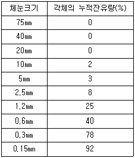
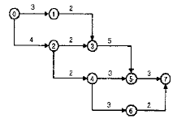
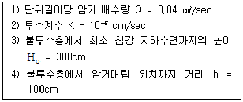
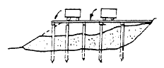
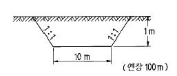
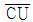

건설재료시험산업기사 (2002-09-08 기출문제)
1과목: 콘크리트공학
1. 프리팩트 콘크리트에서 주입모르터의 품질관리와 관계 없는 것은?
- 압축강도
- 인장강도
- 팽창율
- 블리딩율
(정답률: 46%)

2. 프리스트레스트 콘크리트의 그라우팅용 재료의 물성 중 틀린 것은?
- 28일 압축강도는 200kgf/cm2 이상이어야 한다.
- 팽창율은 10% 이하라야 한다.
- 블리딩율은 5% 이하라야 한다.
- 염화물 이온량은 0.3kgf/m3 이하라야 한다.
(정답률: 알수없음)
3. 시방배합결과 물 170 kgf/m3, 시멘트 350 kgf/m3, 잔골재 700 kgf/m3, 굵은골재 1000 kgf/m3 을 얻었다. 현장에서 골재의 입도는 시방배합에서 가정한 것과 동일하고 잔골재 및 굵은골재의 표면수가 각각 3%와 1% 일 경우 현장배 합상의 단위수량은?
- 129 kgf/m3
- 139 kgf/m3
- 191 kgf/m3
- 201 kgf/m3
(정답률: 알수없음)
4. 콘크리트를 비빈 후에 시간이 경과하여 콘크리트가 굳기 시작하였을 경우에 다시 비비는 것을 무엇이라 하는가?
- 되비비기
- 거듭비비기
- 삽비비기
- 기계비비기
(정답률: 알수없음)
5. 콘크리트 다지기의 설명으로 옳지 않은 것은?
- 다지기에는 내부진동기의 사용을 원칙으로 하나, 사용이 곤란한 장소에서는 거푸집 진동기를 사용해도 좋다.
- 콘크리트는 친 직후에 바로 충분히 다져서 구석구석까지 잘 채워지도록 해야 한다.
- 내부진동기는 연직으로 일정한 간격으로 찔러 넣고, 그 간격은 50cm 이하가 좋다.
- 재 진동은 콘크리트에 나쁜 영향이 생기므로 해서는 안된다.
(정답률: 알수없음)
6. 콘크리트의 타설후 표면에 물이 떠오르는 현상은?
- 풍화
- 블리딩
- 레이턴스
- 소성수축
(정답률: 알수없음)
7. 다음 중 한중콘크리트로 시공할 경우 가장 크게 고려해야 하는 사항은?
- 시공의 용이
- 화학적 저항성 증대
- 초기동해의 방지
- 수화열 저감
(정답률: 64%)
8. 매스콘크리트의 균열제어방법으로 틀린 것은?
- 저발열시멘트를 사용한다.
- 재료의 프리쿨링을 실시한다.
- 될 수 있는 한 최대치수가 작은 굵은 골재를 사용한다.
- 콘크리트의 1회 타설 높이를 작게 한다.
(정답률: 62%)
9. 콘크리트 구조물의 내구성 확보방법에 대한 설명 중 틀린 것은?
- 모르타르로 만든 간격재를 적절한 간격으로 배치하여 철근의 덮개를 확보한다.
- 비빌 때 콘크리트 중의 전체 염화물 이온량을 0.30kgf/m3 이하로 한다.
- 고로슬래그시멘트를 사용하면 콘크리트의 중성화 속도를 늦출 수 있다.
- 강한 화학작용을 받는 장소에서는 콘크리트에 보호층을 설치한다.
(정답률: 알수없음)
10. 콘크리트의 운반에 관한 설명 중 틀린 것은?
- 펌프압송을 하는 경우, 일반적으로 하향배관은 상향배관에 비하여 압송이 용이하기 때문에 펌프가 막히는 현상은 거의 없다.
- 콘크리트의 슬럼프가 매우 큰 경우 오히려 펌프에 의한 압송성이 저하되는 일이 있다.
- 콘크리트의 재료분리를 방지하기 위해서는 경사슈트 보다 연직슈트를 사용하는 것이 좋다.
- 대기온도가 25℃를 넘는 경우, 콘크리트를 비벼서 치기가 끝날 때까지의 시간은 90분을 초과하지 않도록 한다.
(정답률: 20%)
11. 콘크리트의 수축균열을 방지하기 위한 대책으로 옳지 않은 것은?
- 단위수량을 적게 사용한다.
- 분말도가 높은 시멘트를 사용한다.
- 양생을 충분히 한다.
- 철근을 많이 사용한다.
(정답률: 알수없음)
12. 콘크리트의 시방배합을 현장배합으로 수정할 경우에 반드시 해야 할 실험은?
- 비중, 입도
- 표면수율, 입도
- 안정성, 마모율
- 표면수율, 유기불순물
(정답률: 알수없음)
13. 콘크리트의 균열에 영향을 주는 사항 중 가장 큰 것은?
- 콘크리트의 온도변화
- 콘크리트의 마모도
- 콘크리트의 건조수축
- 콘크리트의 피로도
(정답률: 47%)
14. 다음 중 사용량이 비교적 많아 콘크리트 배합설계에 고려해야 되는 혼화재료는?
- AE제
- 지연제
- 플라이애시
- 감수제
(정답률: 82%)
15. 프리팩트 콘크리트(Prepacked Concrete)의 특성으로 잘못된 것은?
- 수중공사에 유리하다.
- 초기강도는 보통콘크리트보다 크나 장기강도는 작다.
- 동결융해에 대한 저항성이 크다.
- 수축률은 보통콘크리트의 1/2 이하이다.
(정답률: 30%)
16. 콘크리트의 크리프(creep)에 대한 설명 중 틀린 것은?
- 크리프는 재령이 작을수록 크게 된다.
- 장기하중이 제거된 경우 탄성회복에 의한 변형 감소가 발생한다.
- 크리프는 콘크리트의 탄성적인 성질에 의하여 발생한다.
- 단위시멘트량이 많을수록 크리프는 크다.
(정답률: 알수없음)
17. 콘크리트 1m3를 만드는데 필요한 골재의 절대용적이 0.65m3이며, 잔골재율(S/a)이 40%일 때 단위 굵은골재 중량은 얼마인가? (단, 굵은골재의 비중 2.65)
- 650 kgf/m3
- 689 kgf/m3
- 1,034kgf/m3
- 1,590 kgf/m3
(정답률: 알수없음)
18. 다음 중 콘크리트의 콘시스텐시를 측정하기 위한 시험 방법이 아닌 것은?
- 슬럼프시험
- 흐름시험
- 구관입시험
- 씻기분석시험
(정답률: 알수없음)
19. 다음 열거한 시멘트 중 혼합시멘트에 속하지 않는 것은?
- 고로슬래그 시멘트
- 플라이애시 시멘트
- 포졸란 시멘트
- 알루미나 시멘트
(정답률: 54%)
20. 일반 콘크리트용 골재가 갖추어야 할 성질으로 맞지 않는 것은?
- 물리적으로 안정하고 내구성이 클 것
- 마모에 대한 저항성이 클 것
- 입자의 크기가 일정할 것
- 화학적으로 안정할 것
(정답률: 60%)
2과목: 건설재료 및 시험
21. 아스팔트 혼합재에 투입되는 필러(filler)란 No.200체를 70%이상 통과하는 돌가루로써 이를 혼합하는 목적은?
- 내구성을 향상시키려고
- 감온성을 크게 하려고
- 점도를 높이려고
- 신도를 낮추려고
(정답률: 알수없음)
22. 르 샤텔리(Le Chatelier)비중병의 0.5cc 눈금까지 광유를 주입하고 시료로 시멘트 64g을 가하여 비중병의 눈금이 21.5cc로 증가되었을때 이 시멘트의 비중은 얼마인가?
- 2.96
- 3.⑤
- 3.12
- 3.19
(정답률: 알수없음)
23. 다음중에서 폭발력이 가장 강하고 수중에서도 폭발 할 수 있는 다이너마이트(dynamite)는 어느 것인가?
- 교질 다이너마이트
- 분상 다이너마이트
- 규조토 다이너마이트
- 스트레이트(straight)다이너마이트
(정답률: 알수없음)
24. 다음 석재 중에서 내구년한이 가장 긴 것은?
- 화강암
- 대리석
- 석회석
- 백운암
(정답률: 알수없음)
25. 골재의 체가름 시험결과 각체의 누적잔유량(%)이 다음의 표와같을 때 조립율은 얼마인가?

- 2.70
- 2.48
- 5.40
- 4.96
(정답률: 19%)
26. 건설공사 품질시험기준 중 수공구조물공사에서 호안용 블럭의 압축강도 시험은 몇매마다 현품으로 시험해야 하는가?
- 3000매
- 4000매
- 5000매
- 6000매
(정답률: 알수없음)
27. 아스팔트의 침입도 시험시 사용해야 할 표준침의 중량과 침입 시간으로 적합한 것은?
- 90gf, 5초
- 90gf, 10초
- 100gf, 10초
- 100gf, 5초
(정답률: 60%)
28. 건설공사 품질시험기준중 동상방지층 및 보조기층의 현장 밀도시험은 2차선 기준으로 몇 m 마다 시행하여야 하는가?
- 50m
- 100m
- 200m
- 300m
(정답률: 19%)
29. 고무화 아스팔트는 스트레이트 아스팔트에 비해서 다음과 같은 이점이 있다. 해당되지 않는 것은?
- 감온성이 작다.
- 응집력과 부착력이 크다.
- 탄성 및 충격저항이 크다.
- 내후성 및 마찰계수가 작다.
(정답률: 55%)
30. 합성고분자화합물(플라스틱)의 일반적인 성질로 잘못된 것은?
- 평균비중이 강보다 작아 구조물의 경량화를 이룰 수 있다.
- 강에 비해 탄성계수가 작고 휘기 쉬운 재료이다.
- 크리프에서는 변형과 동시에 장기간 재하시 강도가 문제가 된다.
- 강에 비해 체적변화 및 선팽창계수가 작다.
(정답률: 알수없음)
31. 긴급 또는 한중 콘크리트 공사에 쓰면 가장 유효한 시멘트는?
- 고로 시멘트
- 알루미나 시멘트
- 보통 포틀랜드 시멘트
- 실리카 시멘트
(정답률: 알수없음)
32. 목재의 조직중에서 강도가 가장 큰 부분은 어느 것인가?
- 수심
- 심재
- 변재
- 수피
(정답률: 70%)
33. 다음 중 골재가 갖추어야 할 성질 중 적당하지 아니한 것은?
- 먼지, 흙과 같은 유해물질은 함유하고 있어도 된다.
- 모양이 입방체 또는 구형에 가까워야 한다.
- 필요한 중량을 가져야 한다.
- 물리, 화학적으로 안정하고 내구성이 커야 한다.
(정답률: 알수없음)
34. 고로슬래그 시멘트의 설명으로 맞지 않는 것은?
- 수화열이 적다.
- 비중이 3.0정도로 일반 시멘트보다 작다.
- 응결시간이 늦고, 초기강도가 크다.
- 일반적으로 내화학성이 좋고 해수, 공장폐수환경에 적합하다.
(정답률: 알수없음)
35. 다음 중 어느 골재를 경량골재라 할 수 있는가?
- 비중이 2.80이상인 골재
- 비중이 2.65~2.80인 골재
- 비중이 2.50~2.65인 골재
- 비중이 2.50이하인 골재
(정답률: 알수없음)
36. 5% 이상의 감수율을 기대할 수 있는 혼화제(재료)는?
- AE제
- 염화칼슘
- 규산소다
- 플라이애쉬
(정답률: 59%)
37. 플라이 애쉬의 물리적 성질을 시험하기 위한 시료의 양은 일반적인 경우 최소 얼마 이상을 채취하여야 하나?
- 2 kg
- 5 kg
- 10 kg
- 15 kg
(정답률: 알수없음)
38. 포오틀랜드 시멘트(Portland Cement)제조시 석고를 넣는 이유로 옳은 것은?
- 강도를 높이기 위해서
- 속결을 막기 위해서
- 클링커를 쉽게 만들기 위해서
- 분말도를 높게 하기 위해서
(정답률: 알수없음)
39. 강에서 탄소의 함유량이 증가될 때 변화되는 강의 성질에 대한 설명으로 틀린 것은?
- 비중과 선팽창 계수가 작아진다.
- 인장강도와 경도가 증가된다.
- 전기에 대한 저항성이 커진다.
- 항복점은 작아진다.
(정답률: 알수없음)
40. 다음 콘크리트용 골재에 대한 설명 중 틀린 것은?
- 하천골재는 단단하고 내구적이며 입형이 양호한 것이 많다.
- 육상골재는 미립분의 함유량이 많고 유기불순물이 혼입되는 경우가 많다.
- 바다골재 중의 염분은 콘크리트의 경화를 지연시키며 초기강도 증진을 저해한다.
- 부순골재를 사용하면 강자갈을 사용할 때보다 단위수량 및 잔골재율을 증가시킬 필요가 있다.
(정답률: 64%)
3과목: 건설시공학
41. 다음과 같은 공정표에서 주공정이 옳게 표기된 것은?

- 0-1-3-5-7
- 0-2-3-5-7
- 0-2-4-5-7
- 0-2-4-6-7
(정답률: 34%)
42. 웰포인트 공법에서 웰포인트의 스크린 상단을 항상 계획 굴착면보다 1.0m 정도 깊게 설치하며 전체스크린을 동일레벨(level)상에 있도록 설계하는 가장 큰 이유는?
- 차수누수방지
- 공기혼입방지
- 기존기초의 보강
- 공해방지
(정답률: 37%)
43. 인력 작업에서 1일 실작업시간 480분, 운반거리 100m, 왕복평균속도 3000m/hr,싣고부리는 시간 2분인경우 1일 운반회수는?
- 60회
- 80회
- 100회
- 120회
(정답률: 알수없음)
44. 터널굴착에서 록볼트는 강아치 동바리나 지주식 동바리에 비해 다음과 같은 특징을 갖고 있다. 이중 적당치 않은 것은?
- 원지반 그 자체가 가진 강도를 이용해서 원지반을 지지한다.
- 터널내의 공간을 넓게 취한다.
- 사용재료가 비교적 많다.
- 터널 단면형상의 변화에 대해서 적응성이 크다.
(정답률: 알수없음)
45. 암반의 분류에서 평점합계에 의한 R.M.R분류법의 매개변수에 포함되지 않는 것은?
- 현장의 응력상태
- 암질지수(R.Q.D)
- 불연속면의 상태
- 암석의 일축압축 강도
(정답률: 알수없음)
46. 다음과 같은 조건일 경우 암거간의 간격은 얼마인가?

- 60cm
- 70cm
- 80cm
- 90cm
(정답률: 20%)
47. 다음 중 Pier 기초의 수직공을 굴착하는 방법중 기계굴착에 속하지 않는 것은?
- Benoto 공법
- Earth drill 공법
- Reverse Circulation 공법
- Gow 공법
(정답률: 30%)
48. 댐콘크리트에 관한 설명으로 틀린 것은?
- 물·시멘트비가 적으면 수밀성이 낮고 내구성의 수명이 짧은 콘크리트가 된다.
- 댐콘크리트는 온도의 급변으로 균열이 생기므로 시멘트 사용량을 줄이는 배합을 한다.
- 콘크리트의 품질에 영향을 주는 요소는 시멘트의 품질 변동, 골재의 표면수량 변동, 입도의 변동, 계량 오차등이다.
- 한번에 타설할 두께를 대략 1.5∼2m를 표준으로 한다.
(정답률: 25%)
49. 준설한 토사를 매립에 이용하는 경우 가장 적당한 준설선은?
- 그랩선(grab dredger)
- 펌프선(pump dredger)
- 버킷선(bucket dredger)
- 디퍼선(dipper dredger)
(정답률: 55%)
50. 공정표 작성과 관계 없는 것은?
- 계절 및 기상상태
- 재료, 노무자의 공급예상
- 공사관리의 조직
- 기계의 선정
(정답률: 알수없음)
51. 배토판을 트랙터의 중심축에 직각으로 부착하여 날판의 위쪽을 앞뒤로 기울게 할 수 있으며 가장 많이 사용되는 도저는?
- 스트레이트도저
- 앵글도저
- 틸트도저
- 레이크도저
(정답률: 알수없음)
52. 보조기층 표면을 다져서 방수성을 높이고 보조기층과 그위에 포설하는 아스팔트 혼합물과의 융합을 좋게하여 양자가 일체가 되도록 하는 것은?
- 택코트(tack coat)
- 실코트(seal coat)
- 컬러코트(color coat)
- 프라임코트(prime coat)
(정답률: 알수없음)
53. 흙의 성토작업에서 다음 그림의 쌓기 방법은?

- 수평층 쌓기
- 유용토 쌓기
- 전방층 쌓기
- 비계층 쌓기
(정답률: 28%)
54. 토공(土工)의 균형이라 함은?
- 무리가 없이 토공작업을 시행함을 말한다.
- 단구간 내에서 절토 토량과 성토 토량이 같아지는 것을 말한다.
- 절토나 성토의 비탈이 균형을 이루는 것을 말한다.
- 절토할 때 체적의 팽창이 없고 또 이것을 성토 했을 때 체적의 감소가 없는 것을 말한다.
(정답률: 알수없음)
55. 토질이 좋고 부지에 여유가 있을 때 또는 흙막이가 필요할 때 나무말뚝이나 H형강이 사용되는데 이 경우에 가장 양호한 공법은?
- 아일랜드공법
- 개착공법
- 트랜치컷공법
- 웰포인트공법
(정답률: 10%)
56. 그림과 같은 단면의 토공을 백호(back hoe)로 할 경우 순 공사비는? (단, back hoe의 시간당 작업량 Q = 50m3/hr, back hoe의 시간당 손료 40,000원/hr,작업효율 E = 0.8)

- 880,000원
- 704,000원
- 44,000,000원
- 35,200,000원
(정답률: 알수없음)
57. 다음 중 제어발파공법(Controlled Blasting)에 속하지 않는 것은?
- 라인드릴링(Line Drilling)공법
- 벤치컷(Bench Cut)공법
- 프리스프리팅(Pre-Splitting)공법
- 스무스블라스팅(Smooth Blasting)공법
(정답률: 알수없음)
58. 보통 흙을 재료로 하여 1,800 m3의 흙쌓기를 축조할 경우 굴착해야할 토량은 얼마인가? (단, 토량의 변화율은 C = 0.90임 )
- 1,900 m3
- 2,000 m3
- 1,800 m3
- 2,100 m3
(정답률: 알수없음)
59. 부벽식 댐에 대한 설명 중 틀린 것은?
- 지반이 비교적 연약한 곳에 유리하다.
- 댐 재료가 얻기 힘들 때 좋다.
- 지지력은 중력댐보다 크다.
- 강성이 약하고 지진에 대한 저항이 적다.
(정답률: 알수없음)
60. 교통하중이나 포장 등 상부하중을 최종적으로 지지하는 포장의 기초부분을 무엇이라 하는가?
- 보조기층
- 동상방지층
- 중간층
- 노상층
(정답률: 알수없음)
4과목: 토질 및 기초
61. 10m × 10m의 정사각형 기초위에 6t/m2의 등분포하중이 작용하는 경우 지표면 아래 10m에서의 수직응력을 2 : 1법으로 구한 값은?
- 1.2t/m2
- 1.5t/m2
- 1.88t/m2
- 2.11t/m2
(정답률: 알수없음)
62. 접지압의 분포가 기초의 중앙부분에 최대응력이 발생하는 기초형식과 지반은 어느 것인가?
- 연성기초이고 점성지반
- 연성기초이고 사질지반
- 강성기초이고 점성지반
- 강성기초이고 사질지반
(정답률: 46%)
63. 점토지반에 제방을 쌓을 경우 초기 안정해석을 위한 흙의 전단강도를 측정하는 방법은?
- UU-test
- CU-test

-test- CD-test
(정답률: 알수없음)
64. 점착력이 0.8t/m2, 단위중량이 1.6t/m3, 내부마찰각이 30° 인 흙에 있어서 점착고(粘着高)는?
- 0.58m
- 1.73m
- 2.02m
- 3.46m
(정답률: 알수없음)
65. 점성토의 전단특성에 관한 설명 중 옳지 않은 것은?
- 일축압축시험시 peak점이 생기지 않을 경우는 변형률 15%일 때를 기준으로 한다.
- 재 성형한 시료를 함수비의 변화없이 그대로 방치하면 시간이 경과 되면서 강도가 일부 회복하는 현상을 액상화 현상이라 한다.
- 전단조건(압밀상태, 배수조건 등)에 따라 강도 정수가 달라진다.
- 포화점토에 있어서 비압밀 비배수 시험의 결과 전단강도는 구속압력의 크기에 관계없이 일정하다.
(정답률: 20%)
66. 모래질 지반에 30㎝ × 30㎝ 크기로 재하시험을 한 결과 20t/m2의 극한지지력을 얻었다. 3m×3m의 기초를 설치할 때 기대되는 극한 지지력은?
- 100 t/m2
- 150 t/m2
- 200 t/m2
- 300 t/m2
(정답률: 50%)
67. 어떤 유선망도에서 상하류의 수두차가 4m, 투수계수가 2×10-3cm/sec, 등수두면의 수가 9개, 유로의 수가 6개일 때 단위폭 1m당 1시간 침투유량은 얼마인가?
- 0.144 m3/hr
- 0.192 m3/hr
- 0.384 m3/hr
- 0.248 m3/hr
(정답률: 24%)
68. 투수계수에 영향을 미치는 인자가 아닌 것은?
- 물의 점성
- 흙의 비중
- 흙의 공극비
- 흙의 입경
(정답률: 알수없음)
69. CBR 시험에서 피스톤 2.5mm 관입될 때와 5mm관입될 때를 비교한 결과 5mm 값이 더 크게 나타났다. 어떻게 하여 CBR 값을 결정하는가?
- 그대로 5mm 값을 CBR 값으로 한다.
- 2.5mm값과 5mm값의 평균값을 CBR값으로 한다.
- 5mm 값을 무시하고 2.5mm값을 표준으로 하여 CBR 값으로 한다.
- 되풀이 시험해서 그래서 5mm 값이 크게 나오면 그대로 5mm값을 CBR값으로 한다.
(정답률: 알수없음)
70. 다음 중 동상을 발생시키는 주요요소가 아닌 것은?
- 온도
- 지하수의 유무
- 흙의 입경
- 흙의 마찰각
(정답률: 50%)
71. 지하수위가 지표면과 일치되며 내부마찰각이 30°, 포화밀도가 2.0t/m3인 비 점성토로 된 반무한사면이 15° 로 경사져 있다. 이때 이 사면의 안전율은?
- 1.00
- 1.08
- 2.00
- 2.15
(정답률: 0%)
72. 다음 토질 시험중 도로의 포장 두께를 정하는데 많이 사용되는 것은?
- 표준관입시험
- C.B.R 시험
- 삼축압축시험
- 표준다짐시험
(정답률: 알수없음)
73. 예민비가 큰 점토란?
- 입자모양이 둥근 점토
- 흙을 다시 이겼을때 강도가 증가하는 점토
- 입자가 가늘고 긴 형태의 점토
- 흙을 다시 이겼을때 강도가 감소하는 점토
(정답률: 알수없음)
74. 흙의 다짐시험에서 다짐에너지를 증가시킬 때 일어나는 결과는?
- 최적함수비와 최대건조밀도가 모두 증가한다.
- 최적함수비와 최대건조밀도가 모두 감소한다.
- 최적함수비는 증가하고 최대건조밀도는 감소한다.
- 최적함수비는 감소하고 최대건조밀도는 증가한다.
(정답률: 알수없음)
75. 어느 흙의 지하수면 아래의 흙의 단위중량이 1.94g/cm3 이었다. 이 흙의 공극비가 0.84 일 때 이 흙의 비중을 구하면?
- 1.65
- 2.65
- 2.73
- 3.73
(정답률: 17%)
76. 어떤 점토층이 어느 압밀도에 달할 때까지의 소요시간을 양면배수라고 생각하여 계산할 때 5년이라고 하면, 일면 배수라고 생각할 때는 몇년인가?
- 10 년
- 20 년
- 30 년
- 40 년
(정답률: 알수없음)
77. 점토의 자연 시료에 대한 일축압축 강도가 3.6㎏/㎝2이고, 이 흙을 되비볐을 때의 파괴압축 응력이 1.2㎏/㎝2 이었다. 이 흙의 점착력(C)과 예민비(St)는 얼마인가?
- C = 1.8㎏/㎝2, St = 3
- C = 1.8㎏/㎝2, St = 2
- C = 2.4㎏/㎝2, St = 3
- C = 2.4㎏/㎝2, St = 2
(정답률: 알수없음)
78. 말뚝기초의 지지력에 관한 설명으로 틀린 것은?
- 부의 마찰력은 아래 방향으로 작용한다.
- 효율을 이용해서 군항의 지지력을 구하는 경우는 마찰말뚝인 경우이다.
- 점성토 지반에는 동역학적 지지력 공식이 잘 맞는다.
- 재하시험 결과를 이용하는 것이 신뢰도가 큰 편이다.
(정답률: 알수없음)
79. 선단에 요동(搖動)장치가 부착된 케이싱 튜브를 압입시켜 관입하고 케이싱(casing)내부의 흙을 해머 그래브(hammer grab)로 굴착하여 소정의 지지 지반까지 구멍을 판후 이수(泥水)를 펌핑하고 철근을 조립하여 콘크리트를 치면서 케이싱 튜브를 빼내 원형의 주상(柱狀)기초를 만드는 공법을 무엇이라 하는가?
- 베노토(Benoto)공법
- 역순환(RCD)공법
- ICOS 공법
- 시카고(Chicago)공법
(정답률: 알수없음)
80. 크기가 1.5m×1.5m 인 정방형 직접기초가 있다. 근입깊이가 1.0m 일 때, 기초저면의 허용지지력을 테르자기(Terzaghi)방법에 의하여 구하면? (단, 기초지반의 점착력은 1.5t/m2, 단위중량은 1.8 t/m3, 마찰각은 20° 이고, 이 때의 지지력 계수는 Nc=17.69, Nq=7.44, Nr=3.64 이며, 허용지지력에 대한 안전율은 4.0으로 한다.)
- 약 13t/m2
- 약 14t/m2
- 약 15t/m2
- 약 16t/m2
(정답률: 31%)